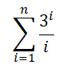
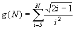

Ejercicios:
-
La
funcion
muestraNumeros(n) que reciba un número entero
positivo n y muestre una lista de números que empiezan en 1 e
incrementan de uno en uno hasta llegar a n y después decrementa de
uno en uno hasta llegar a 1: 1, 2, ... n, n-1, n-2 ... 1
Ejemplo:
Si n = 5, la función
mostraría lo siguiente: 1, 2, 3, 4, 5, 4, 3, 2, 1
Nota que los números deben estar separados
por una coma y después un espacio. Y nota que después del último número no
hay coma.
-
La
funcion
numerosAleatorios() que despliega en pantalla 30
números aleatorios entre -10 y 80.
- La función
Elefantes(n)
que recibe el numero de elefantes y
despliega ese número de líneas.
Ejemplo: Si el número de
elefantes es: 5, la función mostraría lo siguiente:
1 elefante
2 elefantes
3 elefantes
4 elefantes
5 elefantes
-
La función
f4(n) que recibe un número
entero y regresa el resultado de siguiente sumatoria:

Si el número
es 3 entonces, la función regresaría 16.5

-
La función
incremento(LI,
LS, INC) que recibe
tres números enteros, el límite inferior de la serie LI, el límite
superior de la serie LS y el incremento INC.Y utilizando un ciclo
for, la función deberá desplegar en pantalla la secuencia de
números desde LI hasta el LS en el incremento dado.
Ejemplos:
incremento(3, 15, 3), desplegará en pantalla:
3 6 9 12 15
incremento(2, 24, 4), desplegará en
pantalla: 2 6 10 14 18 22
-
La función
imprimeNcadaVez(N) que recibe un número y utilizando
los ciclos while y for, desplegará en pantalla N números consecutivos. Cada
N números la función deberá preguntar al usuario si desea
continuar, de ser así seguirá con la impresión de la secuencia de
números siguientes en pantalla; en caso contrario termina la
función.
Ejemplo:
imprimeNcadaVez(6) deplegará en
pantalla lo siguiente:
1 2 3 4 5 6 Desea continuar (S/N): S
7 8 9
10 11 12 Desea continuar (S/N): S
13 14 15 16 17 18 Desea continuar
(S/N): N
-
La función
numerosAleatorios1() que despliega en
pantalla 50 números aleatorios entre 0 y 80.
- La función
numerosAleatorios2() que despliega en pantalla 30 números
aleatorios entre 20 y 90.
-
La función
numerosAleatorios3() que
despliega en pantalla 20 números aleatorios entre -20 y 30.
-
La
funcionG(N) que
recibe un número entero N mayor o igual a 5 y regresa el resultado
de la siguiente sumatoria:

-
La función
decremento(LS, LI) que recibe dos números enteros, el límite superior de la
serie LS y el límite inferior de la serie LI .Y utilizando un ciclo
for, la función deberá desplegar en pantalla la secuencia de
números desde LS hasta el LI en decrementos de 2.
Ejemplos:
decremento(15, 2), desplegará en pantalla:
15 13 11 9 7 5 3
decremento(7, 3), desplegará en pantalla: 7
5 3
-
El procedimiento
imprime6cadaVez() que utilizando
los ciclos while y for, desplegará en pantalla 6 números consecutivos. Cada 6
números la función deberá preguntar al usuario si desea
continuar, de ser así seguirá con la impresión de la secuencia de
números siguientes en pantalla; en caso contrario termina la
función.
Ejemplo:
imprime6cadaVez() deplegará en
pantalla lo siguiente:
1 2 3 4 5 6 Desea continuar (S/N): S
7 8 9
10 11 12 Desea continuar (S/N): S
13 14 15 16 17 18 Desea continuar
(S/N): N
-
La
función menu()
que despliegue el siguiente menú en pantalla:
1. Muestra números
2. Números
aleatorios
3. Elefantes
4.
Función 4
5. Incremento
6. Imprime N cada
Vez
1.
Números aleatorios 1
2. Números
aleatorios 2
3. Números
aleatorios 3
4. Función G
5. Decremento
6. Imprime 6 cada
Vez
7. Salir
-
La función
main()
que utilice la función menu para desplegar el menú
correspondiente y de acuerdo a la opción seleccionada por el usuario
le dé la oportunidad de ejecutar cualquiera de las funciones que
han sido construidas. Utiliza el estatuto de control if.
Recuerda que la captura de datos debe ser realizada en la sección
del main. Debes utilizar el ciclo while para que
se cicle el programa hasta que el usuario introduzca la opción de
salir o una opción inválida.
-
En el
script
principal manda llamar a
la función main.
-
Guarda tu archivo como:
F_Matricula.py